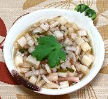

|
Pickled Chard StemsUSA Southwest | ||||
| Makes: Effort: Sched: DoAhead: |
1 cup ** 1 day Best |
This quick pickle condiment is an excellent use for Swiss Chard Stems, which are so often discarded. It can be plain with white chard stems (which I always have far more than other colors) or colorful with red or rainbow stems. | |||
|
1 1 1/2 ------- 2 1/3 1/4 1/4 1 ------- |
cup oz t --- t t c c T --- |
Chard Stems (1) Shallot Salt -- Pickle Mustard Seed Peppercorns (2) Vinegar, Distilled Vinegar, Rice Sugar (3) --------------- |
Make - (1 day - 20 min work)
|